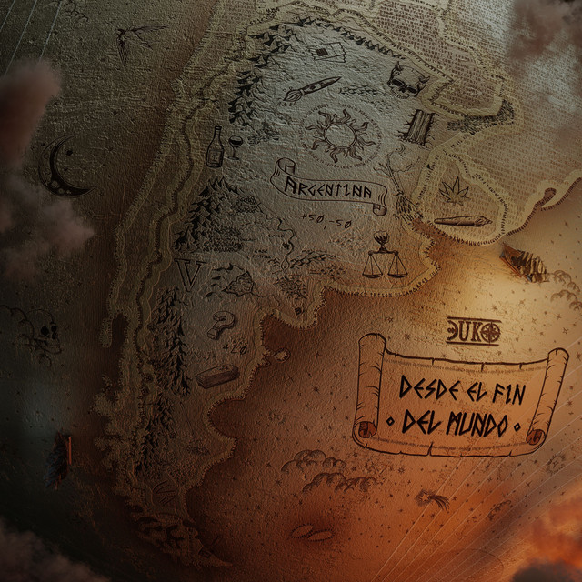

"Albumes de Duki"
"Albumes de Duki"
"Albumes de Duki"
| Portada | Nombre | Datos | Evolocion de Duki |
|---|---|---|---|
|
Lanzado:1/11/2019
Canciones:12 Reproducciones:20,000 |

|
||
|
Lanzado:24/06/2020
Canciones:16 Reproducciones:No exacta. |
|||
|  |
Lanzado:22/04/2021
Canciones:18 Reproducciones:No exacta. |

|
|
|
Lanzado:25/11/2021
Canciones:7 Reproducciones:No exacta. |
|||

|
Lanzado:24/06/2022
Canciones:8 Reproducciones:887 millones |
||

|
Lanzado:22/06/2023
Canciones:18 Reproducciones:top 50 |
||

|
Lanzado:1/11/2024
Canciones:15 Reproducciones:No exactas. |